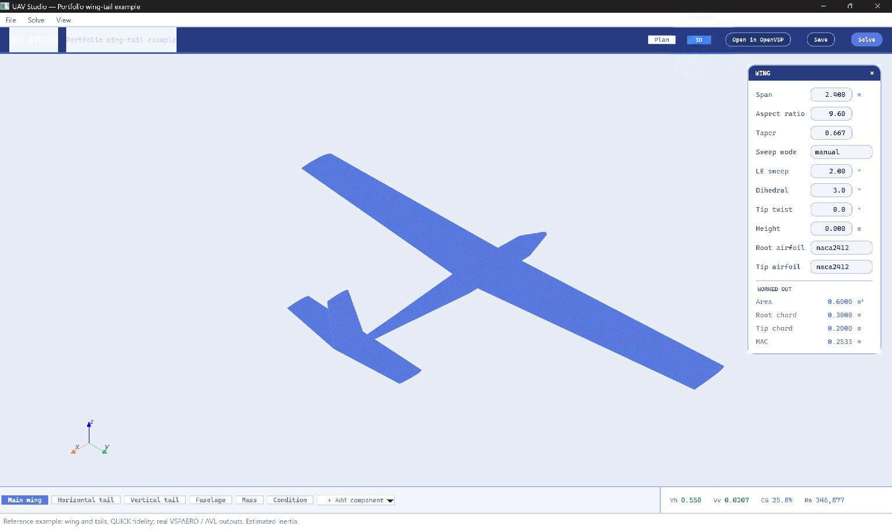
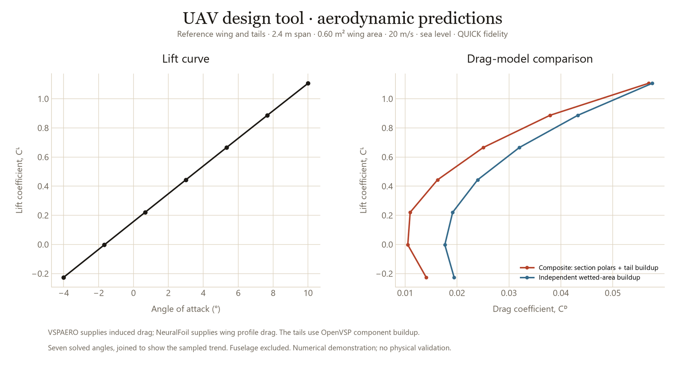
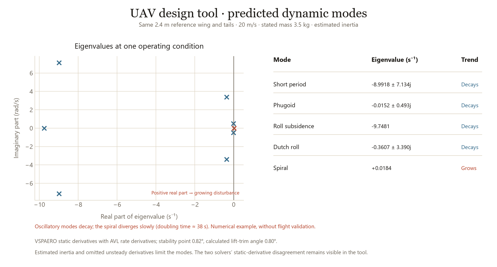
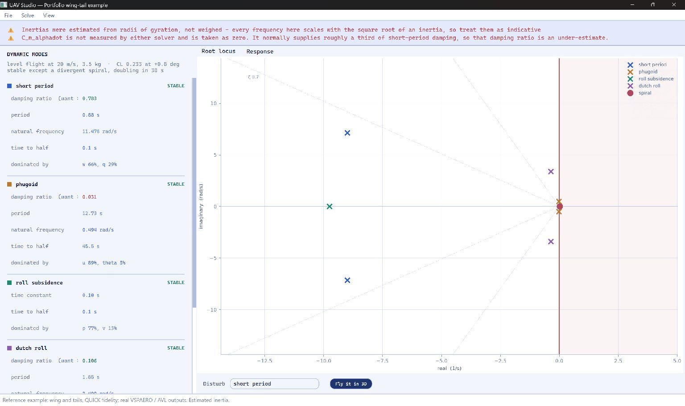
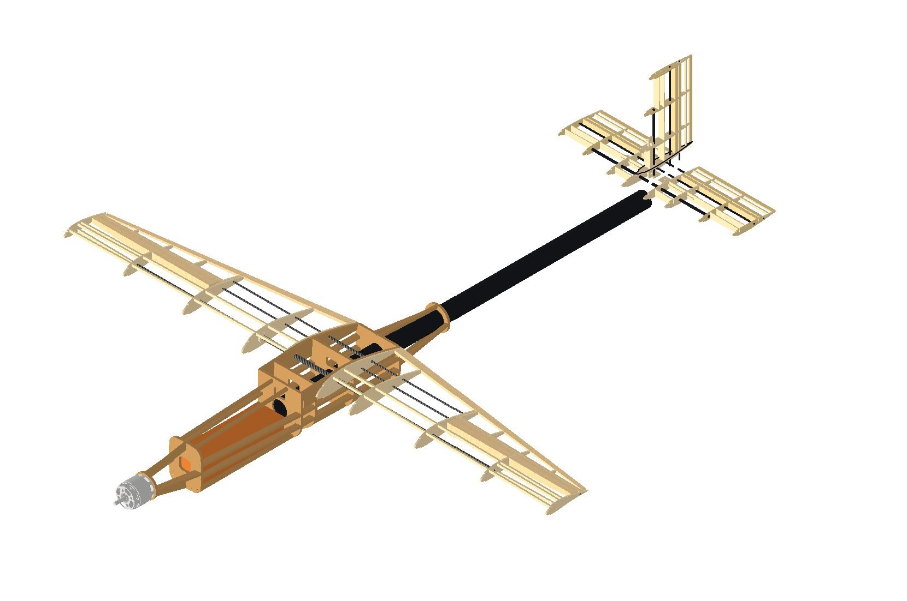

Authoring the airframe
The interface edits a parametric airframe and sends the same geometry to OpenVSP and the analysis, so every result traces back to visible inputs.
Self-initiated project · 2026–
In this personal project, I am developing a Python tool for preliminary UAV aerodynamic and flight dynamics analysis, alongside a planned physical testbed.
I built the geometry and solver workflow, the interface and the checks that compare predictions. The software is in development; the testbed is a CAD design.
In progress

The interface edits a parametric airframe and sends the same geometry to OpenVSP and the analysis, so every result traces back to visible inputs.

The tool runs VSPAERO and keeps a composite drag estimate beside an independent wetted-area buildup, so differences stay visible. Its differential-evolution search rejects failed or implausible results, such as non-positive drag, before scoring a design.


It combines VSPAERO static derivatives with AVL rate derivatives, checks their consistency and builds the longitudinal and lateral state-space models. In this example the oscillatory modes are damped and the spiral diverges slowly, doubling in about 38 s; estimated inertia and omitted derivatives remain stated limitations.


I am also designing a 1 m testbed to fly ArduPilot on a Matek H7A3-WING; its fuselage was designed in CAD in August 2026 and it is not yet built. I hold CAA Flyer and Operator IDs.
Python, OpenVSP/VSPAERO, AVL, PySide6